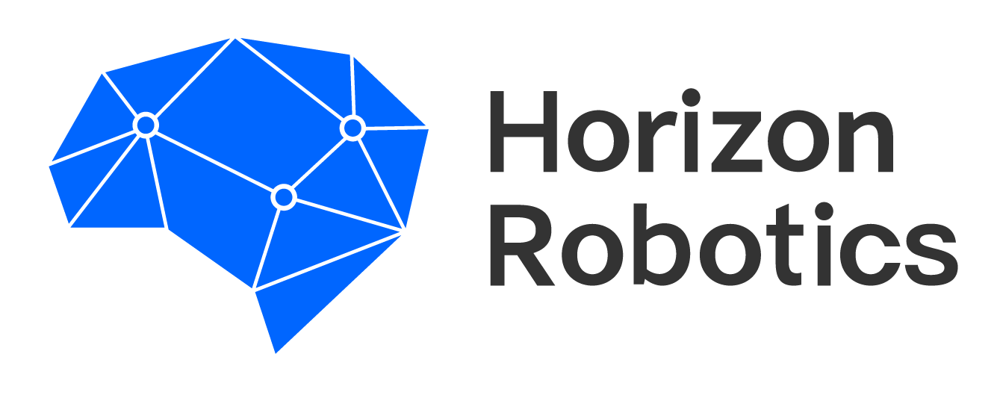

|
Jialian Wu I'm a research scientist at AMD GenAI in Seattle where I work on LLM. I received my Ph.D. degree in Computer Science and Engineering from State University of New York at Buffalo (UB) in 2023, advised by Prof. Junsong Yuan. Before that, I got B.Eng. from Tianjin University in 2018. I received the Best Graduate Research Award and Best First Year Achiever Award from the CSE department of UB. Email / CV / Google scholar / Linkedin / Github |
{kind=link}
PublicationsI'm interested in language model and computer vision. |
|
Self-Taught Agentic Long Context Understanding
Yufan Zhuang, Xiaodong Yu, Jialian Wu, Ximeng Sun, Ze Wang, Jiang Liu, Yusheng Su, Jingbo Shang, Zicheng Liu, Emad Barsoum. ACL, 2025 PDF / Code / |
|
Instella: New State-of-the-art Fully Open 3B Language Models
Jiang Liu, Jialian Wu, Xiaodong Yu, Prakamya Mishra, Sudhanshu Ranjan, Zicheng Liu, et al. tech report, 2025 Blog / Code / Huggingface |
|
Agent Laboratory: Using LLM Agents as Research Assistants
Samuel Schmidgall, Yusheng Su, Ze Wang, Ximeng Sun, Jialian Wu, Xiaodong Yu, Jiang Liu, Zicheng Liu, and Emad Barsoum arXiv, 2025 PDF / Code |
|
GRiT: A Generative Region-to-text Transformer for Object Understanding
Jialian Wu, Jianfeng Wang, Zhengyuan Yang, Zhe Gan, Zicheng Liu, Junsong Yuan, and Lijuan Wang ECCV, 2024 PDF / Code |
|
Efficient Video Instance Segmentation via Tracklet Query and Proposal
Jialian Wu, Sudhir Yarram, Hui Liang, Tian Lan, Junsong Yuan, Jayan Eledath, and Gerard Medioni CVPR, 2022 PDF / Video |
|
Track to Detect and Segment: An Online Multi-Object Tracker
Jialian Wu, Jiale Cao, Liangchen Song, Yu Wang, Ming Yang, and Junsong Yuan CVPR, 2021 PDF / Code / Video |
|
Stacked Homography Transformations for Multi-View Pedestrian Detection
Liangchen Song, Jialian Wu, Ming Yang, Qian Zhang, Yuan Li, and Junsong Yuan ICCV, 2021 (Oral) |
|
Handling Difficult Labels for Multi-label Image Classification via Uncertainty Distillation
Liangchen Song, Jialian Wu, Ming Yang, Qian Zhang, Yuan Li, and Junsong Yuan ACM MM, 2021 |
|
Robust Knowledge Transfer via Hybrid Forward on the Teacher-Student Model
Liangchen Song, Jialian Wu, Ming Yang, Qian Zhang, Yuan Li, and Junsong Yuan AAAI, 2021 |
|
Temporal-Context Enhanced Detection of Heavily Occluded Pedestrians
Jialian Wu, Chunluan Zhou, Ming Yang, Qian Zhang, Yuan Li, and Junsong Yuan CVPR, 2020 |
|
Forest R-CNN: Large-Vocabulary Long-Tailed Object Detection and Instance Segmentation
Jialian Wu, Liangchen Song, Tiancai Wang, Qian Zhang, and Junsong Yuan ACM MM, 2020 / IEEE Transactions on Multimedia, 2021 PDF / Code |
|
Self-Mimic Learning for Small-scale Pedestrian Detection
Jialian Wu, Chunluan Zhou, Qian Zhang, Ming Yang, and Junsong Yuan ACM MM, 2020 |
Professional Experience |

|
Research Scientist, Bellevue, WA
April 2024 - Present |
|
Research Scientist, San Diego, CA
June 2023 - March 2024 |
|
|
Applied Scientist Intern, Amazon, Seattle, WA
August - October, 2022. Advisor: Dr. Tian Lan and Dr. Hui Liang Project: Video Instance Segmentation |
|

|
Research Intern, Redmond, WA
May-August, 2022. Advisor: Dr. Jianfeng Wang, Dr. Zhe Gan, Dr. Lijuan Wang, Dr. Zhengyuan Yang, Dr. Zicheng Liu Project: Object Understanding with Natural Language |
|
Applied Scientist Intern, Amazon, Seattle, WA
May-August, 2021. Advisor: Dr. Tian Lan and Dr. Hui Liang Project: Video Instance Segmentation |
|
|  |
Research Intern, Cupertino, CA
May-August, 2020. Advisor: Dr. Yu Wang and Dr. Ming Yang Research Intern, Beijing. 05/2018 - 07/2019. Advisor: Dr. Qian Zhang and Dr. Ming Yang. Projects: Object tracking and detection |
|
Music is a great passion of my life :) Template from Jon Barron. |